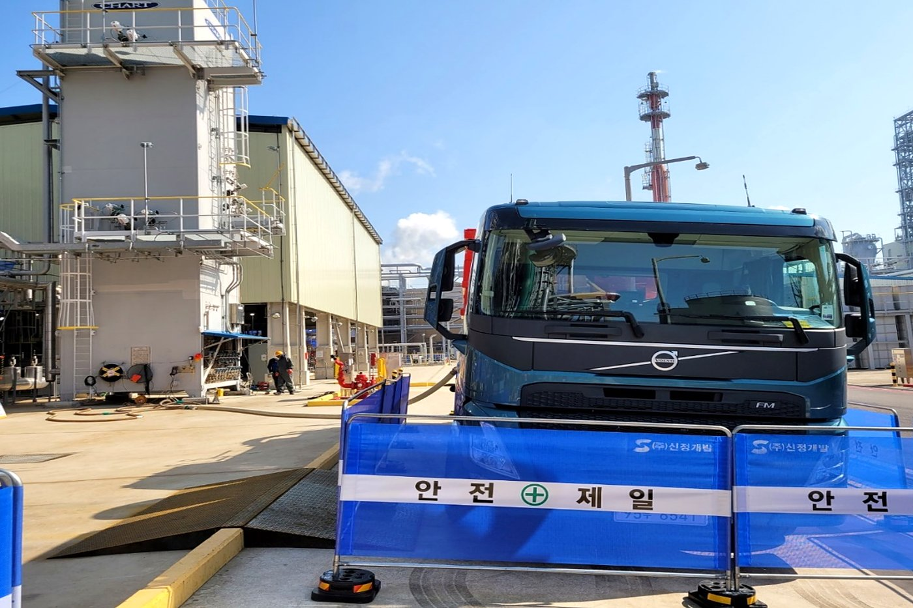
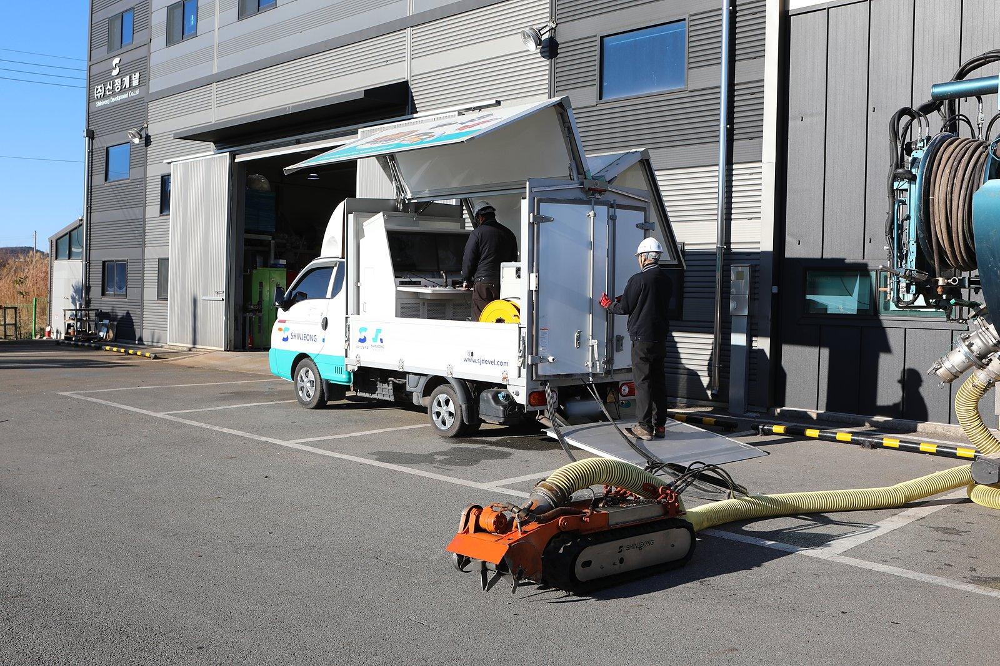
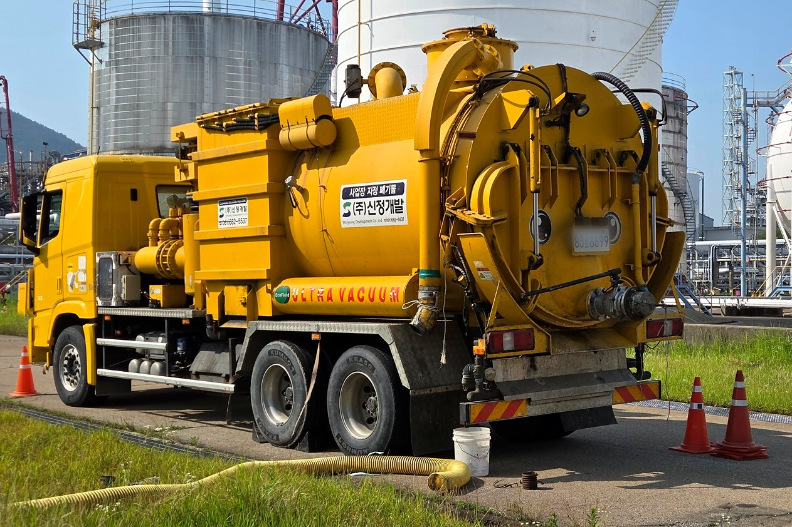
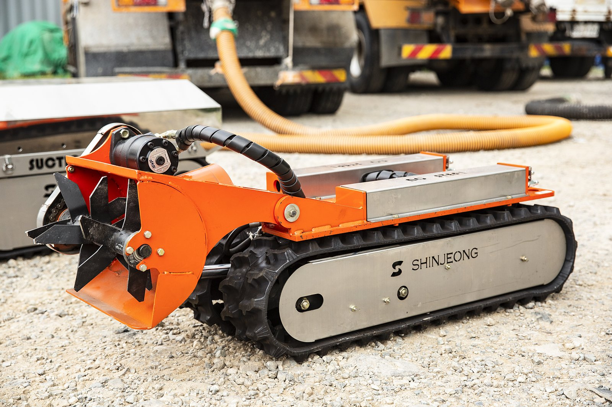
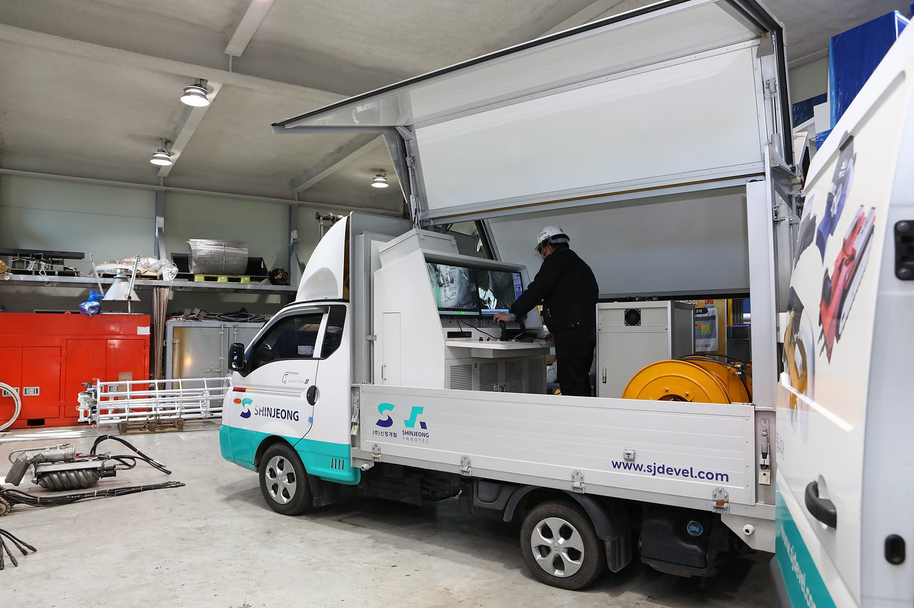
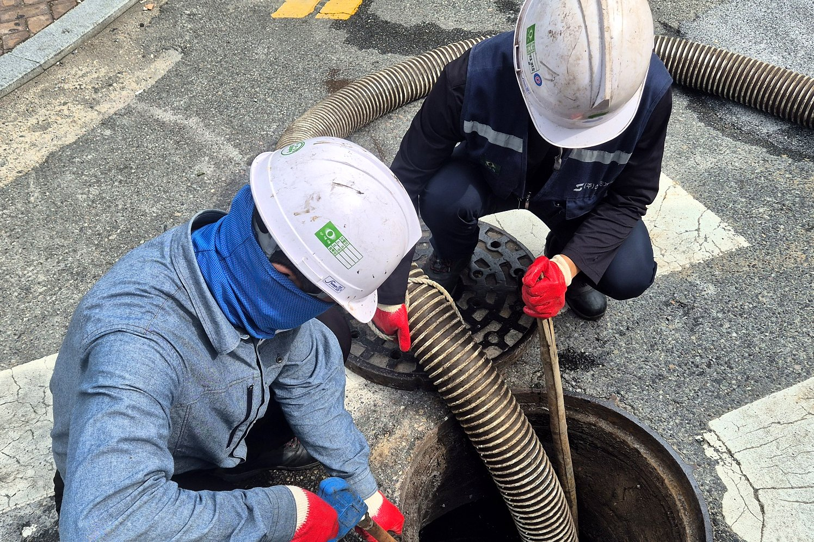
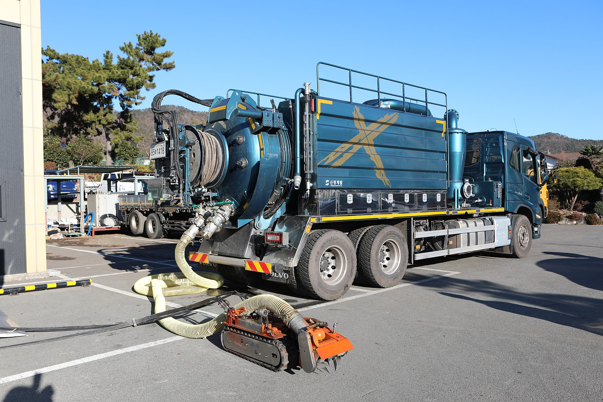

STEP 01
현장 검토·사전 Test
현장 적용 가능성을 검토하고 사전 Test를 실시합니다. 출입구·내부 구조·잔류물 성상·온도를 확인합니다.
출처 기술소개서 p.17·19 · 사진: 산업설비 현장의 안전 구획과 차량
문의부터 회수물 처리까지의 순서, 현장 배치, 인원 투입 작업과의 차이를 회사 기술자료에 적힌 대로 정리했습니다.
기술소개서의 '무인 Cleaning System'과 'Robot-Tank Cleaning System' 절차를 순서대로 옮겼습니다. 사진은 각 단계에 해당하는 장비·현장의 모습이며, 실제 진행은 현장 조건에 따라 달라집니다.

현장 적용 가능성을 검토하고 사전 Test를 실시합니다. 출입구·내부 구조·잔류물 성상·온도를 확인합니다.
출처 기술소개서 p.17·19 · 사진: 산업설비 현장의 안전 구획과 차량

제어 차량과 흡입차를 배치하고 로봇을 호스로 연결합니다. CCTV와 원격 조정 장치를 설치합니다.
출처 기술소개서 p.18·20 · 사진: 본사 앞 — 제어 차량과 호스로 연결된 궤도형 장비

Vacuum Car(흡입차)를 이용해 설비 외부에서 잔여 물질을 먼저 제거합니다.
출처 기술소개서 p.19 · 사진: 산업설비 현장의 진공흡입차

로봇을 투입해 내부 잔여 위험 물질을 1차 회수하고, 전면부 Jet Nozzle로 내부를 세척합니다(2차 Washing).
출처 기술소개서 p.19 · 사진: 전면에 파쇄 장치를 갖춘 궤도형 장비

작업자는 설비 밖 제어 차량에서 CCTV로 내부를 보며 로봇을 조작합니다.
출처 기술소개서 p.18·20 · 사진: 차량의 모니터·제어 장치와 조작자

위험 물질이 줄어든 뒤 작업자가 투입되어 내부 최종 잔여물을 제거합니다.
출처 기술소개서 p.19 · 사진: 맨홀에 호스를 넣어 작업하는 두 작업자
회수물은 데칸타·필터프레스로 탈수해 폐기물량을 줄이고 처리 기간을 단축합니다.
출처 기술소개서 p.19·31
제어 차량에서 CCTV로 설비 내부를 보며 로봇을 원격 조정하고, 로봇은 호스로 흡입차(Vacuum Car)와 연결됩니다. 촉매·충진물 작업에서는 분리장치(Separator)를 함께 구성합니다.
회사소개서 33쪽 '촉매 처리 작업'과 기술소개서 18·20쪽 '공사개략도'의 구성을 선으로 옮긴 도식입니다. 실제 배치는 현장 조건에 따라 달라집니다.

기술소개서(2025)에 인용된 고용노동부 2014~2023 산업재해조사: 밀폐공간 질식 재해는 100명당 50명 사망, 설비 관련 사고 중 Cleaning 중 사고 23.7%. 로봇 시스템은 이 위험을 줄이기 위해 개발했습니다.
| 주요 위험성 | 인원 투입 작업 | Robot 투입 작업 | 비고 |
|---|---|---|---|
| 유독가스에 의한 질식 | 위험 노출 | 위험 회피 | 위험물질 사전 제거 |
| 고위험 물질 접촉 | 위험 노출 | 위험 회피 | 위험물질 사전 제거 |
| 공기 공급 중단에 의한 질식 | 위험 노출 | 위험 회피 | 작업자 안전 확보 |
| 줄 걸림에 의한 넘어짐 | 위험 노출 | 위험 회피 | 내부 작업시간 최소화 |
| 협소 공간에 따른 근골격 부상 | 위험 노출 | 위험 회피 | 협소공간 대체 투입 |
| 주요 효율성 | 인원 투입 작업 | Robot 투입 작업 | 비고 |
|---|---|---|---|
| 일반 작업 허가서로 진행 | 제한 | 가능 | 준비시간 감소 |
| 1시간 이상 연속 작업 | 제한 | 가능 | 유효 작업시간 확보 |
| Jet · 흡입 동시 작업 | 제한 | 가능 | 작업 효율 증가 |
| CCTV 내부 감시 | 제한 | 가능 | 실시간 내부 확인 |
| 위험구역(방폭·가스) 긴급 작업 | 제한 | 가능 | 위험지역 내 즉시 투입 |
두 표는 기술소개서(2025) 23·24쪽 '밀폐공간 작업 위험성·효율성 비교'를 그대로 옮긴 것입니다.
기술소개서의 '용도별 적용 예시'입니다. 장점만 적지 않고, 자료에 적힌 유의점(단점)도 함께 옮겼습니다.
유의점 · 유해성 감소 후 Final Cleaning 인력 작업 필요
적용 범위 · 방폭지역(고위험가스 설비) 작업 — 유압 구동, 궤도부 고무 재질, 파쇄·접촉부 Non-spark 재질 · 수중 작업 및 Water Jet-Cleaning 동시 작업 · CCTV·Jet 등 추가 장비 장착
유의점 · 배터리 교체·충전에 따른 작업 시간 제한 · 비방폭 지역 사용
적용 범위 · Open Ditch · Pond 하부 퇴적물 처리 · 작동 설비 하부 퇴적물 처리 · 오염 지역 진입로 확보 · 인력 작업이 힘든 고착 Sludge 제거
유의점 · 복잡한 내부 공간에서는 간섭·부분 Cleaning · 세정수 비산에 따른 시야 저하 — CCTV 연동으로 확보
적용 범위 · 협소 공간 Water Jet Cleaning · 오염지역 무인 방제(유해물질 제거) · 협소 공간 Inspection
유의점 · 비산물에 따른 시야 저하 — CCTV 연동으로 확보 · Manway 한계: 최소 18인치
적용 범위 · Reactor / Tank 내부(질소 분위기 포함) 충진물 제거 · 방폭 지역 작업 · 기타 설비 Sludge 및 고형 폐기물 제거
클리닝·준설로 회수한 물질은 데칸타(원심분리) 또는 필터프레스(여과·압착)로 탈수합니다. 기술소개서가 적은 효과는 폐기물 처리량 감량, 폐기물 처리비용 감소, 폐기물 처리시간 단축입니다.
원심분리를 이용한 고액분리
여과·압착을 이용한 탈수
절차는 기술소개서(2025)의 작업 절차를 그대로 옮겼습니다. 처리량·함수율 등 사양은 대상 물질의 응집 상태에 따라 달라지므로 상담 시 안내합니다.